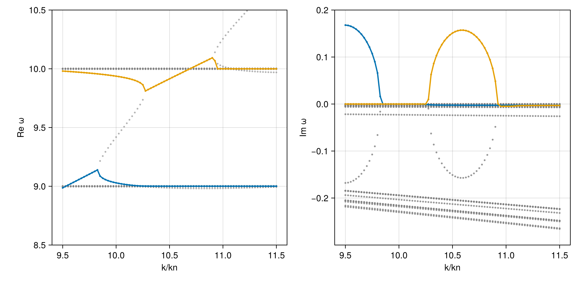

Case: Ion cyclotron emission
Ion cyclotron emission (ICE) driven by a ring ion beam distribution
using PlasmaBO
using PlasmaPopulations: gyrofrequency, thermal_speed, alfven_speed
using PlasmaPopulations: E_SI as qe, MP_SI as mp, C_SI as c0
using DelimitedFiles
# Magnetic field (Tesla)
B0 = 2.1
# Species table taken from the original BO MATLAB input
fpath = pkgdir(PlasmaBO, "test/ice_Irvine18.in")
readdlm(fpath)4×8 Matrix{Any}:
"qs(e)" "ms(m_unit)" "ns(m^-3)" … "vdsz/c" "vdsr/c" "ifv(1/0)"
2 4.0 1.0e16 0.0 0.045 1
1 2.0 9.98e18 0.0 0.0 1
-1 0.0005447 1.0e19 0.0 0.0 1Dispersion Curve Scan
tbl = readdlm(fpath, Float64; skipstart = 1)
# charge in e, mass in proton masses, temperatures in eV, drift and ring speeds in c
species = map(eachrow(tbl)) do row
z, m, n, Tz, Tp, vd, vr = row[1:7]
p = Particle(z * qe, m * mp)
vdf = GaussianRing(; vr_perp = vr * c0, w_perp = thermal_speed(p, Tp), vth_para = thermal_speed(p, Tz), vd_para = vd * c0)
Population(p, vdf; n)
end
plasma = Plasma(species...; B0)
ωn = gyrofrequency(species[1].particle, B0)
vA = alfven_speed(plasma)
theta = deg2rad(89.5)
kn = ωn / vA
k = collect(9.5:0.025:11.5) .* kn81-element Vector{Float64}:
93.30054333102575
93.54607107663371
93.79159882224168
94.03712656784963
94.2826543134576
94.52818205906556
94.77370980467353
95.01923755028149
95.26476529588943
95.5102930414974
⋮
110.97854101479905
111.224068760407
111.46959650601497
111.71512425162294
111.9606519972309
112.20617974283887
112.45170748844681
112.69723523405477
112.94276297966275Every eigenvalue, linked into branches. The spectrum is symmetric under ω → -conj(ω), so each unstable branch has a mirror at Re ω < 0; keep Re ω > 0:
survey = solve(DispersionProblem(plasma, AngleSweep(; k, theta)), BOHH(; N = 12, J = 4))
unstable = filter(b -> isgrowing(b) && real(b[1]) > 0, link(survey))
[maximum(imag, b.omega) / ωn for b in unstable] # peak growth rates2-element Vector{Float64}:
0.1678955273872143
0.15714128026740357using CairoMakie
fig, (axr, axi) = dispersion_diagram(survey; k_unit = kn, omega_unit = ωn, xlabel = "k/kn")
dispersion_diagram!((axr, axi), unstable; k_unit = kn, omega_unit = ωn)
ylims!(axr, 8.5, 10.5)
ylims!(axi, -0.3, 0.2)
fig
They grow near the 9th and 10th harmonics of ωn, the cyclotron frequency of the ring-beam alpha particles (first row of the table).